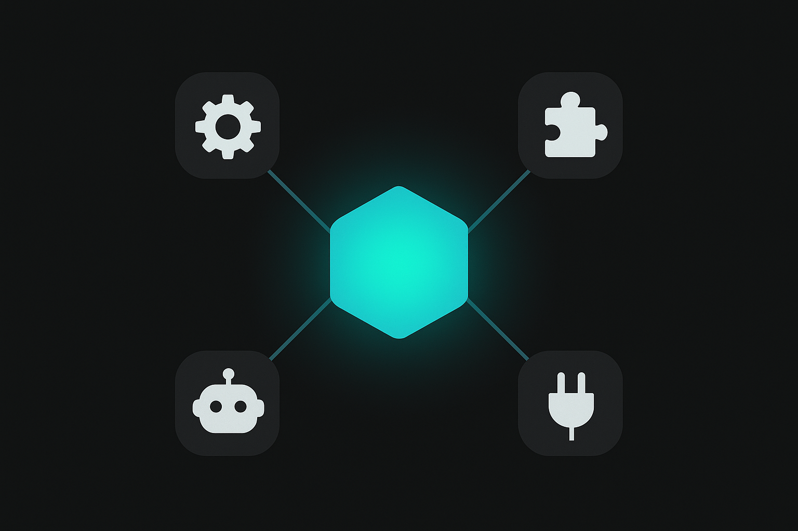

Course 07 / Layer 2 -- ツール応用
Claude Code応用 プロダクション開発Claude Codeの基本操作(C04)を習得した次のステップ。スキル開発、フック、サブエージェント、仕様駆動開発、チーム運用、CI/CD統合まで。スキル/フック/エージェント開発を日本語で体系的に学べる唯一のコースです。
中級-上級 約12時間(720分) 10 Sections + 2 Review ハンズオン比率 64% 前提: C04受講済み

Section 01 -- 60min(講義30 + ハンズオン30)
コンテキストエンジニアリング -- CLAUDE.md設計論
コンテキストエンジニアリングとは
プロンプトエンジニアリングが「1回の指示をどう書くか」に注目するのに対し、コンテキストエンジニアリングはAIに渡す文脈全体を設計する技術です。CLAUDE.md、メモリファイル、MCP接続、会話履歴――AIが参照できる情報のすべてが設計対象になります。
Claude Codeの出力品質は、モデルの能力よりもコンテキストの質に依存します。同じモデルでも、適切なCLAUDE.mdがあるプロジェクトと何もないプロジェクトでは、出力精度に歴然たる差が出ます。
3層コンテキストモデル
%%{init:{'theme':'dark','themeVariables':{'primaryColor':'#00A5BF','primaryBorderColor':'#007A8F','primaryTextColor':'#e8e8e8','lineColor':'#00A5BF','secondaryColor':'#1a1a1a','background':'#141414','mainBkg':'#1a1a1a','nodeBorder':'#00A5BF'}}}%%
graph TB
subgraph L1["Layer 1: グローバル設定"]
G["~/.claude/CLAUDE.md"]
GM["~/.claude/memory/"]
end
subgraph L2["Layer 2: プロジェクト設定"]
P[".claude/CLAUDE.md"]
PM[".claude/memory/"]
PS[".claude/settings.json"]
end
subgraph L3["Layer 3: タスク設定"]
T["会話中の指示"]
F["添付ファイル"]
end
L3 -->|上書き| L2
L2 -->|上書き| L1
style L1 fill:#1a1a1a,stroke:#007A8F
style L2 fill:#1a1a1a,stroke:#00A5BF
style L3 fill:#1a1a1a,stroke:#33C4DA
Layer 3(タスク設定)が最も優先度が高く、Layer 1(グローバル)を上書きする
Layer 1: グローバル設定(~/.claude/CLAUDE.md)
全プロジェクト共通のルール。コーディングスタイル、言語設定、セキュリティポリシーなど、自分のすべての開発に適用したい項目を記述します。
Layer 2: プロジェクト設定(.claude/CLAUDE.md)
プロジェクト固有のルール。使用する技術スタック、ディレクトリ構成、命名規則、テスト方針。Gitリポジトリにコミットしてチームで共有できます。
Layer 3: タスク設定(会話中の指示)
その場限りの詳細指示。具体的なファイルパス、実装方針の変更、一時的な例外ルール。最も優先度が高く、Layer 1/2のルールを上書きします。
Tips: 上書きルールの実用例
グローバル設定で「TypeScript優先」と書いていても、Pythonプロジェクトの.claude/CLAUDE.mdに「Python 3.12を使用」と書けば、そのプロジェクトではPythonが優先されます。会話中に「この関数だけはJavaScriptで」と指示すれば、さらにそれが優先されます。
メモリシステム
Claude Codeは会話をまたいで情報を記憶するメモリシステムを持っています。~/.claude/memory/にMarkdownファイルとして保存され、MEMORY.mdがインデックスの役割を果たします。
メモリの種類
種類 接頭辞 用途 例
ユーザー設定 user_ 個人の好み、作業スタイル 「TypeScript優先」「日本語で応答」 フィードバック feedback_ Claude Codeの振る舞いへの修正指示 「コミット前に必ず確認して」 プロジェクト project_ プロジェクト固有の情報 「デプロイ先はVercel」 リファレンス reference_ 技術情報、外部仕様の参照 「APIの認証フロー」
良いCLAUDE.mdの設計パターン
具体的に書く -- 「きれいなコードを書いて」ではなく「関数は50行以内、ネストは3段まで」禁止事項には理由を添える -- 「.envファイルを読み取らないこと(APIキー漏洩防止のため)」優先順位を明示する -- 「可読性 > パフォーマンス > 簡潔さ」サンプルコードを含める -- 抽象的な説明より、期待するコードの具体例が効く
アンチパターン: CLAUDE.mdの肥大化
CLAUDE.mdに数百行のルールを詰め込むと、すべてのタスクでトークンを消費し、指示同士が矛盾するリスクも高まります。グローバルには本当に全プロジェクト共通の項目だけを置き、プロジェクト固有の詳細はLayer 2に分離してください。
ハンズオン: 3層コンテキスト設計 + メモリ構築 30min
目標: 3層それぞれのCLAUDE.mdを設計し、メモリファイル3つを作成してClaude Codeで動作確認する
パート1: 3層CLAUDE.mdを設計する(15min)
テンプレートをダウンロードし、任意のプロジェクトフォルダで以下のディレクトリ構造を作成してください
mkdir -p ~/.claude/memory
mkdir -p my-project/.claude/memory
mkdir -p my-project/.claude/skillsコピー
グローバルCLAUDE.md(~/.claude/CLAUDE.md)を作成します。以下を参考に自分の設定を書いてください
# グローバル設定
## 言語
- 日本語で応答すること
- コメントは日本語で書くこと
## コーディングスタイル
- TypeScript/JavaScript を優先
- 関数は50行以内に収める
- ネストは3段まで
- 不変性(Immutability)を重視
## セキュリティ
- .envファイルは読み取らないこと(APIキー漏洩防止)
- credentialsを含むファイルは読み取らないこと
- コミット前に機密情報が含まれていないか確認することコピー
プロジェクトCLAUDE.md(.claude/CLAUDE.md)を作成します
# プロジェクト設定
## 概要
Todoアプリ。React + TypeScript + Vite で構築。
## 技術スタック
- React 19
- TypeScript 5.7
- Vite 6
- Tailwind CSS 4
## ディレクトリ構成
- src/components/ -- UIコンポーネント
- src/hooks/ -- カスタムフック
- src/types/ -- 型定義
- src/utils/ -- ユーティリティ関数
## 命名規則
- コンポーネント: PascalCase (例: TodoItem.tsx)
- フック: camelCase with use prefix (例: useTodos.ts)
- 型: PascalCase with Props/State suffix
## テスト方針
- Vitest + React Testing Library
- カバレッジ80%以上を維持コピー
パート2: メモリファイルを作成する(10min)
3つのメモリファイルを作成します
# ~/.claude/memory/MEMORY.md に以下を記述
# メモリインデックス
## ユーザー設定
- [コーディング好み](user_coding.md) -- 関数型パターン、不変性重視
## フィードバック
- [コミットルール](feedback_commit.md) -- コミット前に必ず確認を取る
## プロジェクト
- [Todoアプリ進捗](project_todo.md) -- 認証機能が未実装コピー
# ~/.claude/memory/user_coding.md
## コーディングの好み
- スプレッド演算子でイミュータブルに更新する
- Promise.allで並列実行を優先する
- 早期リターンでネストを減らすコピー
# ~/.claude/memory/feedback_commit.md
## コミットルール
- git commit の前に必ずユーザーに確認を取ること
- コミットメッセージは日本語で書くこと
- .envファイルがステージングに含まれていないか確認することコピー
パート3: 動作テスト(5min)
プロジェクトフォルダでClaude Codeを起動し、以下のプロンプトを送信してください
現在のメモリの内容を確認して、何が記録されているか教えてください。
また、このプロジェクトのCLAUDE.mdの設定内容もサマリしてください。コピー
期待される結果
Claude Codeがグローバル設定とプロジェクト設定の両方を認識し、メモリファイルの内容を正しく読み取って報告するはずです。「日本語で応答」「TypeScript優先」などグローバル設定と、「React + Vite」「Todoアプリ」などプロジェクト設定の両方が表示されれば成功です。
メモリについては「コーディングの好み」「コミットルール」「Todoアプリ進捗」の3つが認識されていることを確認してください。
グローバルCLAUDE.mdを作成した
プロジェクトCLAUDE.mdを作成した
メモリファイル3つ(user, feedback, project)を作成した
MEMORY.mdインデックスを作成した
Claude Codeで設定とメモリの読み取りを確認した
Section 02 -- 60min(講義25 + ハンズオン35)
カスタムスキル開発 -- 再利用可能な指示セット
スキルとは
.claude/skills/ディレクトリに置くMarkdownファイルです。特定のタスクに対する詳細な指示をまとめておくことで、毎回同じ説明を繰り返す必要がなくなります。Claude Codeは関連するスキルを自動で検出し、タスクに適用します。
スキルファイルの構造
---
name: review-code
description: コードレビューを実施し、改善点を報告する
triggers:
- レビューして
- コードレビュー
- review this
---
# コードレビュースキル
## レビュー観点
1. 可読性 -- 変数名、関数名は明確か
2. セキュリティ -- 入力検証、SQLインジェクション対策
3. パフォーマンス -- 不要なループ、N+1クエリ
4. テスト -- テストカバレッジ、エッジケース
## 出力フォーマット
- 深刻度(Critical / Warning / Info)
- 該当箇所(ファイル名 + 行番号)
- 問題の説明
- 修正案コピー
フロントマター
name -- スキルの識別名。/skill-nameで呼び出せるdescription -- スキルの説明。Claude Codeがスキルを自動選択する際の判断材料triggers -- このスキルを発動させるキーワード。ユーザーの入力にこれらが含まれると自動適用
フロントマター全フィールド仕様
スキルファイルのフロントマターには以下のフィールドが使えます。すべて任意ですが、name/description/triggersの3つは実質必須と考えてください。
---
# 必須級フィールド
name: review-code # スキルの識別名。/review-code で呼出可能
description: | # 複数行の説明。Claude Codeがスキル選択時に参照
コードレビューを実施し、
深刻度付きで改善点を報告する
triggers: # 自動発動キーワード(配列)
- レビューして
- コードレビュー
- review this
# 任意フィールド
type: skill # "skill"(デフォルト) or "agent"
model: claude-sonnet-4-20250514 # 実行時に使うモデルを指定
# 省略するとセッションのモデルを継承
tools: # 使用可能なツールを制限(配列)
- Read
- Grep
- Glob
- Edit
# 高度な設定
input_schema: # 入力パラメータの型定義(JSON Schema形式)
type: object
properties:
target_path:
type: string
description: レビュー対象のファイルパス
severity_threshold:
type: string
enum: [Critical, Warning, Info]
description: この深刻度以上のみ報告
---コピー
フィールド 型 デフォルト 説明
name string ファイル名 スキルの識別名。/nameで呼び出せる description string なし スキルの説明。自動選択の判断材料 triggers string[] [] 自動発動キーワードの配列 type string "skill" "skill" or "agent" model string セッション継承 実行時モデルの指定 tools string[] 全ツール 使用可能ツールの制限 input_schema object なし 入力パラメータのJSON Schema定義
プログレッシブ開示
スキルファイルのすべてを常に読み込むとトークンを消費します。プログレッシブ開示の考え方で構成すると効率的です。
冒頭 -- 基本ルール(常に適用。5-10行)中盤 -- 詳細ルール(必要時に参照。20-30行)末尾 -- サンプルコード、エッジケース(まれに参照)
スキルの活用パターン
コード生成 特定のフレームワーク、ライブラリに沿ったコード生成の指示。Reactコンポーネントの命名規則、状態管理パターンなど。
レビュー レビュー観点、深刻度の基準、出力フォーマットを定義。チーム全員が同じ品質基準でレビューできる。
ドキュメント生成 JSDoc、README、CHANGELOG等の生成ルール。出力形式とカバーすべき項目を標準化。
テスト生成 テストフレームワーク、カバレッジ基準、テストケースの分類ルール。Arrange-Act-Assertパターンの強制など。
Tips: 良いスキルの条件
1つのスキルは1つの責務に限定する(単一責任)
実行結果が検証可能である(テストで確認できる)
別のプロジェクトにもコピーして使える汎用性がある
フロントマターのdescriptionが具体的である
ハンズオン: 3つのスキルを作成する 35min
目標: コードレビュー、テスト生成、ドキュメント生成の3つのスキルファイルを作成し、Claude Codeで動作確認する
スキル1: コードレビュー(review-code.md)(12min)
.claude/skills/review-code.md を作成してください
以下の内容で .claude/skills/review-code.md を作成してください。
---
name: review-code
description: コードレビューを実施し、深刻度付きで改善点を報告する
triggers:
- レビューして
- コードレビュー
- review
---
# コードレビュースキル
## レビュー観点(優先順)
1. セキュリティ -- 入力検証漏れ、ハードコードされた機密情報
2. バグリスク -- null参照、境界値、型の不整合
3. 可読性 -- 関数50行以内、ネスト3段以内、命名の明確さ
4. パフォーマンス -- 不要なレンダリング、N+1クエリ、メモリリーク
## 出力フォーマット
各指摘は以下の形式で報告する:
- [Critical/Warning/Info] ファイル名:行番号
- 問題: 具体的な説明
- 修正案: コード例付きの改善提案
## ルール
- Criticalが1つでもあれば「マージ不可」と明記する
- 良い点も最低1つ挙げる
- 指摘は具体的に。「改善の余地がある」のような曖昧な表現は禁止コピー
スキル2: テスト生成(generate-tests.md)(12min)
以下の内容で .claude/skills/generate-tests.md を作成してください。
---
name: generate-tests
description: 指定されたコードに対するユニットテストを生成する
triggers:
- テスト書いて
- テスト生成
- generate tests
---
# テスト生成スキル
## テストフレームワーク
- Vitest + React Testing Library(React)
- Jest(Node.js）
## テスト構造
- Arrange-Act-Assert パターンを厳守
- describe で機能単位、it で個別ケースをグループ化
## カバレッジ基準
- 正常系: 最低2ケース
- 異常系: 最低2ケース(null、空配列、不正な型)
- 境界値: 最低1ケース
## 命名規則
- describe: 関数名またはコンポーネント名
- it: 「〜の場合、〜を返す」形式(日本語可)
## 禁止事項
- テスト内でモックを過度に使わない(実装の詳細に依存するテストは脆い)
- snapshot testは明示的に指示された場合のみコピー
スキル3: ドキュメント生成(generate-docs.md)(11min)
以下の内容で .claude/skills/generate-docs.md を作成してください。
---
name: generate-docs
description: コードからJSDoc、README、CHANGELOGを生成する
triggers:
- ドキュメント書いて
- ドキュメント生成
- generate docs
---
# ドキュメント生成スキル
## JSDoc
- すべてのexport関数にJSDocを付与する
- @param, @returns, @throws, @example を必ず含める
- @exampleは実際に動作するコード例にする
## README.md
構成:
1. プロジェクト名 + 1行説明
2. セットアップ手順(コマンドをコピー可能に)
3. 使い方(基本的な使用例)
4. API仕様(公開関数の一覧)
5. 開発ガイド(テスト実行、ビルド手順)
## CHANGELOG.md
- Keep a Changelog形式に従う
- [Added], [Changed], [Fixed], [Removed] のカテゴリ分け
- セマンティックバージョニングに対応コピー
3つのスキルを作成したら、Claude Codeで動作確認します。
src/utils/calculator.ts のコードをレビューしてください。コピー
「レビューして」というトリガーワードに反応し、review-codeスキルの観点でレビューが実行されるか確認してください。
期待される結果
Claude Codeがreview-codeスキルを自動検出し、セキュリティ、バグリスク、可読性、パフォーマンスの4観点でレビューを実施します。各指摘には[Critical/Warning/Info]の深刻度、ファイル名:行番号、問題の説明、修正案が含まれるはずです。
スキルが適用されていない場合は、.claude/skills/ディレクトリのパスが正しいか、フロントマターの書式(---で囲む)が正しいか確認してください。
review-code.md を作成した
generate-tests.md を作成した
generate-docs.md を作成した
Claude Codeでスキルの自動適用を確認した
Section 03 -- 60min(講義25 + ハンズオン35)
フック開発 -- イベント駆動の自動化
フックとは
Claude Codeのイベントに反応して自動実行されるシェルスクリプトやプログラムです。ファイル編集時にlintを走らせる、機密ファイルへの書き込みをブロックする、セッション終了時にコストを集計する――手動で忘れがちな作業を自動化できます。
イベント種類
イベント 発火タイミング 主な用途 戻り値の影響
PreToolUse ツール実行前 バリデーション、ブロック exit 2 でブロック PostToolUse ツール実行後 ログ、通知、自動修正 stdoutがClaude Codeに渡る Stop セッション終了時 クリーンアップ、集計 stdoutでメッセージ表示
settings.jsonでのフック定義
{
"hooks": {
"PreToolUse": [
{
"matcher": "Edit|Write",
"command": "bash .claude/hooks/block-env.sh \"$TOOL_INPUT\""
}
],
"PostToolUse": [
{
"matcher": "Edit",
"command": "bash .claude/hooks/auto-lint.sh \"$TOOL_INPUT\""
}
],
"Stop": [
{
"command": "bash .claude/hooks/session-summary.sh"
}
]
}
}コピー
matcherの仕組み
matcherはツール名に対する正規表現です。"Edit|Write"はEditツールまたはWriteツールにマッチします。省略するとすべてのツールにマッチします(Stopイベントではmatcherは不要)。
フックの入出力
$TOOL_INPUT -- ツールに渡された入力(JSON文字列)。ファイルパスや編集内容が含まれるstdout -- フックの標準出力はClaude Codeにフィードバックされるexit code -- PreToolUseでexit 2を返すとツール実行がブロックされる
実用的なフック例
例1: .envファイルへの書き込みをブロック(PreToolUse)
#!/bin/bash
# .claude/hooks/block-env.sh
# .env, .credentials への書き込みをブロック
TOOL_INPUT="$1"
FILE_PATH=$(echo "$TOOL_INPUT" | grep -oP '"file_path"\s*:\s*"([^"]*)"' | head -1 | sed 's/.*"file_path"\s*:\s*"//;s/"//')
if [[ "$FILE_PATH" == *.env* ]] || [[ "$FILE_PATH" == *credentials* ]] || [[ "$FILE_PATH" == *secret* ]]; then
echo "BLOCKED: 機密ファイル($FILE_PATH)への書き込みは禁止されています。"
exit 2
fi
exit 0コピー
例2: ファイル変更時にESLint自動実行(PostToolUse)
#!/bin/bash
# .claude/hooks/auto-lint.sh
# Editツール実行後にESLintを自動実行
TOOL_INPUT="$1"
FILE_PATH=$(echo "$TOOL_INPUT" | grep -oP '"file_path"\s*:\s*"([^"]*)"' | head -1 | sed 's/.*"file_path"\s*:\s*"//;s/"//')
if [[ "$FILE_PATH" == *.ts ]] || [[ "$FILE_PATH" == *.tsx ]] || [[ "$FILE_PATH" == *.js ]]; then
RESULT=$(npx eslint "$FILE_PATH" --format compact 2>&1)
if [ $? -ne 0 ]; then
echo "ESLint警告: $FILE_PATH"
echo "$RESULT"
else
echo "ESLint: $FILE_PATH -- OK"
fi
fiコピー
例3: セッション終了時にサマリ出力(Stop)
#!/bin/bash
# .claude/hooks/session-summary.sh
# セッション終了時に変更ファイル一覧と未コミット変更を表示
echo "=== セッションサマリ ==="
echo ""
echo "--- 未コミット変更 ---"
git diff --stat 2>/dev/null || echo "(gitリポジトリ外)"
echo ""
echo "--- 未追跡ファイル ---"
git ls-files --others --exclude-standard 2>/dev/null
echo ""
echo "セッション終了: $(date '+%Y-%m-%d %H:%M')"コピー
hooks設定の完全な記述例
settings.jsonのhooksセクションには、PreToolUse / PostToolUse / Stopの3イベントを組み合わせて記述します。以下は実用的な設定の全体像です。
{
"permissions": {
"allow": ["Read", "Glob", "Grep", "Bash(git *)"],
"deny": ["Bash(rm -rf *)"]
},
"hooks": {
"PreToolUse": [
{
"matcher": "Edit|Write",
"command": "bash .claude/hooks/block-env.sh \"$TOOL_INPUT\""
},
{
"matcher": "Bash",
"command": "bash .claude/hooks/validate-command.sh \"$TOOL_INPUT\""
}
],
"PostToolUse": [
{
"matcher": "Edit",
"command": "bash .claude/hooks/auto-lint.sh \"$TOOL_INPUT\""
},
{
"matcher": "Write",
"command": "bash .claude/hooks/auto-format.sh \"$TOOL_INPUT\""
}
],
"Stop": [
{
"command": "bash .claude/hooks/session-summary.sh"
},
{
"command": "bash .claude/hooks/cost-report.sh"
}
]
}
}コピー
フックのEvent Object構造
フックスクリプトが受け取る$TOOL_INPUTはJSON文字列で、以下の構造を持ちます。
フィールド 型 説明 例
tool_name string 実行されるツール名 "Edit", "Write", "Bash" tool_input object ツールへの入力パラメータ 以下参照 tool_input.file_path string 対象ファイルパス(Edit/Writeの場合) "src/index.ts" tool_input.old_string string 置換前の文字列(Editの場合) "const x = 1" tool_input.new_string string 置換後の文字列(Editの場合) "const x = 2" tool_input.command string 実行コマンド(Bashの場合) "npm test" tool_input.content string 書き込み内容(Writeの場合) "export default {}"
フックスクリプトの中でjqやgrep等を使ってフィールドを抽出し、条件判定に使います。exit 0で通過、exit 2でブロック、stdoutのメッセージがClaude Codeに返ります。
フックのデバッグ
フックスクリプトにset -xを先頭に追加すると実行トレースが見える
echoでデバッグ情報を出力し、Claude Codeのフィードバックで確認フックスクリプト単体でbash .claude/hooks/block-env.sh '{"file_path":".env"}'のようにテスト可能
注意: フックの実行時間
フックの実行が遅いとClaude Codeの応答が遅延します。ESLint等の重い処理はファイル単体に絞り、プロジェクト全体のlintは避けてください。タイムアウトは設定されていないため、無限ループにならないよう注意が必要です。
ハンズオン: 3つのフックを作成する 35min
目標: セキュリティフック、品質フック、通知フックの3つを作成してsettings.jsonに統合する
フック1: セキュリティフック(12min)
フックディレクトリを作成します
mkdir -p .claude/hooksコピー
前述のblock-env.shを .claude/hooks/block-env.sh として保存してください
単体テストで動作確認します
# ブロックされるケース
bash .claude/hooks/block-env.sh '{"file_path":".env.local"}'
echo "Exit code: $?"
# 通過するケース
bash .claude/hooks/block-env.sh '{"file_path":"src/index.ts"}'
echo "Exit code: $?"コピー
フック2: 品質フック(12min)
前述のauto-lint.shを .claude/hooks/auto-lint.sh として保存してください
ESLintが入っていない場合は npm install -D eslint でインストールしてください
テスト用のTypeScriptファイルに意図的にlintエラーを入れて確認します
フック3: 通知フック(11min)
前述のsession-summary.shを .claude/hooks/session-summary.sh として保存してください
3つのフックをsettings.jsonに統合します
.claude/settings.json に以下のhooksセクションを追加してください。
{
"hooks": {
"PreToolUse": [
{
"matcher": "Edit|Write",
"command": "bash .claude/hooks/block-env.sh \"$TOOL_INPUT\""
}
],
"PostToolUse": [
{
"matcher": "Edit",
"command": "bash .claude/hooks/auto-lint.sh \"$TOOL_INPUT\""
}
],
"Stop": [
{
"command": "bash .claude/hooks/session-summary.sh"
}
]
}
}コピー
Claude Codeで「.envファイルにAPIキーを書いて」と指示し、ブロックされることを確認します
.env ファイルに OPENAI_API_KEY=sk-test123 を追加してください。コピー
期待される結果
PreToolUseフックが発火し、「BLOCKED: 機密ファイル(.env)への書き込みは禁止されています。」というメッセージが表示されてツール実行がブロックされるはずです。Claude Codeは「フックによりブロックされました」と報告し、別の方法(環境変数の設定方法の案内など)を提案する動作が期待されます。
block-env.sh を作成し単体テストに成功した
auto-lint.sh を作成した
session-summary.sh を作成した
settings.json にフック設定を統合した
.envへの書き込みがブロックされることを確認した
Review Hands-on A -- 30min
復習A: CLAUDE.md + スキル + フック統合テスト
Section 01-03で作成した3層CLAUDE.md、スキル3つ、フック3つを組み合わせて動作確認します。個々のパーツが連携して機能するかが焦点です。
課題: 統合環境の検証 30min
成果物: 全コンポーネントの動作確認チェックリスト(全項目クリア)
統合テスト手順
プロジェクトフォルダでClaude Codeを起動します(5min)
以下の5つのテストを順番に実行してください
テスト1: コンテキストの認識確認
現在のプロジェクト設定をサマリしてください。
技術スタック、命名規則、テスト方針を含めてください。コピー
テスト2: スキルの自動適用確認
src/utils/helpers.ts をレビューしてください。コピー
テスト3: フックのブロック確認
.env.local に DATABASE_URL=postgres://localhost:5432/mydb を追加してください。コピー
テスト4: テスト生成スキル
src/utils/helpers.ts のテストを書いてください。コピー
テスト5: ドキュメント生成スキル
src/utils/helpers.ts のJSDocを生成してください。コピー
期待される結果
テスト1: グローバル設定(日本語応答、TypeScript優先)とプロジェクト設定(React + Vite)の両方が正しく認識されている。
テスト2: review-codeスキルが自動適用され、4観点(セキュリティ、バグリスク、可読性、パフォーマンス)でレビューが実行される。
テスト3: block-env.shフックにより書き込みがブロックされる。
テスト4: generate-testsスキルが適用され、Arrange-Act-Assertパターンでテストが生成される。
テスト5: generate-docsスキルが適用され、@param, @returns, @example を含むJSDocが生成される。
テスト1: プロジェクト設定が正しく認識された
テスト2: レビュースキルが自動適用された
テスト3: .envへの書き込みがブロックされた
テスト4: テスト生成スキルが正しく動作した
テスト5: ドキュメント生成スキルが正しく動作した
Section 04 -- 65min(講義30 + ハンズオン35)
エージェント/サブエージェント -- 並列実行と委譲
Agentツール
Claude Code内から別のClaude Codeインスタンス(サブエージェント)を起動する仕組みです。複雑なタスクを分割し、それぞれのサブタスクを独立したエージェントに委譲できます。
%%{init:{'theme':'dark','themeVariables':{'primaryColor':'#00A5BF','primaryBorderColor':'#007A8F','primaryTextColor':'#e8e8e8','lineColor':'#00A5BF','secondaryColor':'#1a1a1a','background':'#141414','mainBkg':'#1a1a1a','nodeBorder':'#00A5BF'}}}%%
graph TB
Main["メインエージェント メインエージェントが複数のサブエージェントにタスクを分散し、結果を統合する
Agent toolのパラメータ一覧
Claude Codeが内部的にサブエージェントを起動する際に使うパラメータです。カスタムエージェントやプロンプトから間接的に制御できます。
パラメータ 型 必須 説明
prompt string 必須 サブエージェントに渡すタスクの指示。具体的であるほど精度が上がる subagent_type string 任意 サブエージェントの種類を指定(下記参照)。省略時はgeneral-purpose isolation string 任意 "none"(デフォルト、メインと同じ作業ツリー) / "worktree"(gitの別worktreeで隔離) model string 任意 サブエージェントが使うモデル。例: "claude-sonnet-4-20250514"。コスト削減に有効 run_in_background boolean 任意 trueにするとバックグラウンド実行。メインエージェントは完了を待たずに次の処理に進む
subagent_typeの種類一覧
種類 用途 特徴
general-purpose 任意のタスク メインエージェントと同等の能力。ファイル読み書き、コマンド実行すべて可能 Explore コードベース調査 読み取り専用。ファイルの書き込み不可。安全な調査向き Plan 実装計画の策定 コード変更なしで計画だけを立てる。設計フェーズに最適 Code 実装特化 コード生成・編集に特化。テスト実行も可能 Review レビュー コード変更の差分レビュー。読み取り中心で指摘を生成
並列実行
複数のサブエージェントを同時に起動することで、独立したタスクを並列処理できます。テスト生成とドキュメント更新のように依存関係がないタスクを同時に走らせると、トータルの待ち時間が大幅に短縮されます。
worktree分離
gitのworktreeを使って安全にブランチ作業を委譲する手法です。サブエージェントがメインブランチとは別のworktreeで作業するため、メインの作業ツリーを汚さずに済みます。
# worktreeを作成してブランチ作業を分離
git worktree add ../my-project-feature feature/new-auth
# サブエージェントはこのworktreeで作業する
# isolation: "worktree" パラメータを指定コピー
カスタムエージェント
.claude/agents/ディレクトリにMarkdownファイルを置くことで、特定の役割に特化したカスタムエージェントを定義できます。
---
name: security-auditor
description: セキュリティ観点でコードベースを監査する
tools:
- Read
- Glob
- Grep
- Bash(read-only)
model: claude-sonnet-4-20250514
---
# セキュリティ監査エージェント
あなたはセキュリティ専門の監査員です。
## 監査項目
1. ハードコードされた機密情報(APIキー、パスワード)
2. SQLインジェクション脆弱性
3. XSS脆弱性
4. 不適切なファイルパーミッション
5. 安全でない依存関係
## 出力形式
- 深刻度: Critical / High / Medium / Low
- 該当ファイル: パスと行番号
- 説明: 脆弱性の内容
- 修正案: 具体的な対策コピー
カスタムエージェントの設定項目
tools -- エージェントが使用できるツールを制限。Read/Grep/Globだけにすれば読み取り専用model -- 使用するモデル。コスト削減のためSonnetを指定するケースが多いdescription -- エージェントの役割。メインエージェントがタスク委譲時に参照
Tips: サブエージェント設計のベストプラクティス
タスクは明確に定義する。「このディレクトリのTypeScriptファイルからセキュリティ問題を検出せよ」のように具体的に
必要なコンテキスト(ファイルパス、対象範囲)を明示的に渡す
結果の統合方針(マージ方法、競合時の優先順位)を事前に決める
ハンズオン: サブエージェントとカスタムエージェント 35min
目標: Exploreエージェントでコードベース調査、worktree分離でブランチ作業、カスタムエージェント定義ファイルの作成
パート1: Exploreエージェントでコードベース調査(10min)
このプロジェクトのコードベースを調査して、以下をまとめてください。
サブエージェント(Explore)を使って調査してください。
調査項目:
1. ディレクトリ構成の概要
2. 使用している主要ライブラリとバージョン
3. エントリポイント(メインファイル)
4. テストの有無と構成
5. 設定ファイルの一覧コピー
パート2: worktree分離でブランチ作業(15min)
新しいブランチ用のworktreeを作成します
git worktree add ../my-project-feature feature/add-loggingコピー
Claude Codeにworktree分離でのタスクを依頼します
feature/add-logging ブランチで、すべてのAPI呼び出し箇所にログ出力を追加してください。
worktree分離で作業し、メインブランチには影響を与えないでください。
ログフォーマット:
- 開始: [API] GET /path -- 開始
- 完了: [API] GET /path -- 200 OK (150ms)
- エラー: [API] GET /path -- 500 Error: messageコピー
作業後にworktreeを削除します
git worktree remove ../my-project-featureコピー
パート3: カスタムエージェント定義ファイル(10min)
以下の内容で .claude/agents/security-auditor.md を作成してください。
---
name: security-auditor
description: セキュリティ観点でコードベースを監査する
tools:
- Read
- Glob
- Grep
model: claude-sonnet-4-20250514
---
# セキュリティ監査エージェント
あなたはセキュリティ専門の監査員です。
## 監査項目
1. ハードコードされた機密情報(APIキー、パスワード、トークン)
2. SQLインジェクション脆弱性
3. XSS脆弱性(dangerouslySetInnerHTML等)
4. 不適切な依存関係(既知の脆弱性)
5. 認証・認可の不備
## 出力形式
各発見について:
- 深刻度: Critical / High / Medium / Low
- 該当ファイル: パスと行番号
- 説明: 脆弱性の内容と攻撃シナリオ
- 修正案: 具体的なコード変更
## ルール
- 誤検知を減らすため、確信度が低い指摘にはその旨を明記する
- Criticalが1つでもあれば冒頭に警告を出すコピー
期待される結果
パート1: サブエージェントがプロジェクトを走査し、ディレクトリ構成、package.jsonの依存関係、エントリポイント等をまとめた調査レポートが返ってきます。
パート2: worktreeが作成され、別ディレクトリでブランチ作業が進みます。メインの作業ディレクトリのファイルは変更されません。
パート3: .claude/agents/security-auditor.md が作成され、/security-auditor で呼び出し可能になります。
Exploreエージェントでコードベース調査を実行した
worktreeを作成してブランチ作業を分離した
カスタムエージェント定義ファイルを作成した
Section 05 -- 60min(講義25 + ハンズオン35)
MCP統合 -- 高度な外部ツール連携
MCPサーバーの自作
C04ではMCPクライアントとしてのClaude Code(既存のMCPサーバーに接続する側)を学びました。このセクションでは、自分でMCPサーバーを作る側に回ります。TypeScript SDKを使って、独自のツール、リソース、プロンプトをClaude Codeに提供します。
%%{init:{'theme':'dark','themeVariables':{'primaryColor':'#00A5BF','primaryBorderColor':'#007A8F','primaryTextColor':'#e8e8e8','lineColor':'#00A5BF','secondaryColor':'#1a1a1a','background':'#141414','mainBkg':'#1a1a1a','nodeBorder':'#00A5BF'}}}%%
graph LR
CC["Claude Code Claude CodeがMCPクライアントとして自作サーバーのツールを呼び出す
ツール定義の構造
import { McpServer } from "@modelcontextprotocol/sdk/server/mcp.js";
import { StdioServerTransport } from "@modelcontextprotocol/sdk/server/stdio.js";
import { z } from "zod";
const server = new McpServer({
name: "my-tools",
version: "1.0.0",
});
// ツール定義
server.tool(
"search-docs", // ツール名
"社内ドキュメントを検索する", // 説明(Claude Codeが参照)
{ // 入力スキーマ(Zod)
query: z.string().describe("検索キーワード"),
limit: z.number().default(5).describe("最大取得件数"),
},
async ({ query, limit }) => {
// 実際の検索処理
const results = await searchDocuments(query, limit);
return {
content: [{ type: "text", text: JSON.stringify(results, null, 2) }],
};
}
);
// サーバー起動
const transport = new StdioServerTransport();
await server.connect(transport);コピー
リソース公開
リソースはread-onlyのデータ提供です。ツールと異なり、Claude Codeが能動的に呼び出すのではなく、コンテキストとして参照できるデータを公開します。
server.resource(
"project-config",
"project://config",
async (uri) => ({
contents: [{
uri: uri.href,
mimeType: "application/json",
text: JSON.stringify(await loadProjectConfig()),
}],
})
);コピー
プロンプト公開
再利用可能なプロンプトテンプレートをMCPサーバーから提供します。
server.prompt(
"code-review",
"コードレビュー用プロンプトテンプレート",
{ filePath: z.string().describe("レビュー対象のファイルパス") },
({ filePath }) => ({
messages: [{
role: "user",
content: {
type: "text",
text: `以下のファイルをセキュリティ、パフォーマンス、可読性の観点でレビューしてください。\n\nファイル: ${filePath}`,
},
}],
})
);コピー
セキュリティ
最小権限 -- MCPサーバーには必要最小限のファイルアクセス権だけ与える入力バリデーション -- Zodスキーマで入力を厳密に検証する環境変数でAPIキー管理 -- ハードコードしないログ出力 -- ツール呼び出しのログを残して監査可能にする
注意: MCPサーバーのセキュリティ
MCPサーバーはClaude Codeの権限で動作します。サーバーにファイル削除やネットワークアクセスの機能を持たせる場合、意図しない操作が実行されるリスクを認識してください。readOnlyなツールから始めて、必要に応じて権限を拡張するのが安全です。
ハンズオン: MCPサーバーを作る 35min
目標: TypeScript MCPサーバーをスキャフォールドし、カスタムツールを実装してClaude Codeから接続する
パート1: スキャフォールド(10min)
mkdir -p mcp-server && cd mcp-server
npm init -y
npm install @modelcontextprotocol/sdk zod
npm install -D typescript @types/node tsx
npx tsc --init --target ES2022 --module NodeNext --moduleResolution NodeNext --outDir distコピー
パート2: カスタムツールを実装(15min)
ファイル検索ツールを作ります。プロジェクト内のファイルをキーワードで検索する機能です。
以下の内容で mcp-server/src/index.ts を作成してください。
import { McpServer } from "@modelcontextprotocol/sdk/server/mcp.js";
import { StdioServerTransport } from "@modelcontextprotocol/sdk/server/stdio.js";
import { z } from "zod";
import { readdir, readFile, stat } from "fs/promises";
import { join, extname } from "path";
const server = new McpServer({
name: "project-search",
version: "1.0.0",
});
// ファイル内テキスト検索ツール
server.tool(
"search-in-files",
"プロジェクト内のファイルをキーワードで検索する",
{
keyword: z.string().describe("検索キーワード"),
directory: z.string().default(".").describe("検索対象ディレクトリ"),
extensions: z.array(z.string()).default([".ts", ".tsx", ".js"]).describe("対象拡張子"),
},
async ({ keyword, directory, extensions }) => {
const results: string[] = [];
async function searchDir(dir: string) {
const entries = await readdir(dir, { withFileTypes: true });
for (const entry of entries) {
const fullPath = join(dir, entry.name);
if (entry.name.startsWith(".") || entry.name === "node_modules") continue;
if (entry.isDirectory()) {
await searchDir(fullPath);
} else if (extensions.includes(extname(entry.name))) {
const content = await readFile(fullPath, "utf-8");
const lines = content.split("\n");
lines.forEach((line, i) => {
if (line.includes(keyword)) {
results.push(`${fullPath}:${i + 1}: ${line.trim()}`);
}
});
}
}
}
await searchDir(directory);
return {
content: [{
type: "text",
text: results.length > 0
? `${results.length}件見つかりました:\n${results.join("\n")}`
: `"${keyword}" は見つかりませんでした。`,
}],
};
}
);
const transport = new StdioServerTransport();
await server.connect(transport);コピー
パート3: Claude Codeから接続(10min)
.mcp.json に接続設定を追加します
{
"mcpServers": {
"project-search": {
"command": "npx",
"args": ["tsx", "mcp-server/src/index.ts"],
"env": {}
}
}
}コピー
Claude Codeを再起動して接続を確認します
MCPツール "search-in-files" を使って、プロジェクト内の "useState" を検索してください。コピー
期待される結果
Claude Codeがproject-search MCPサーバーに接続し、search-in-filesツールを呼び出します。プロジェクト内の.ts/.tsx/.jsファイルから "useState" を含む行が一覧表示されます。
接続に失敗する場合は、(1) .mcp.json のパスが正しいか、(2) npx tsx がインストールされているか、(3) TypeScriptのコンパイルエラーがないか、を順に確認してください。
MCPサーバーのスキャフォールドを完了した
search-in-filesツールを実装した
.mcp.jsonに接続設定を追加した
Claude Codeからツールを呼び出せることを確認した
Review Hands-on B -- 30min
復習B: エージェント + MCP連携ワークフロー
Section 04-05で学んだサブエージェントとMCPを組み合わせ、実用的なワークフローを構築します。
課題: セキュリティ監査ワークフロー 30min
成果物: カスタムエージェント + MCPツールを連携させたセキュリティ監査の実行結果
手順
Section 04で作成したsecurity-auditorエージェントを呼び出します
/security-auditor このプロジェクトのセキュリティ監査を実施してください。
特に以下を重点的にチェック:
1. ハードコードされた機密情報
2. 入力バリデーションの漏れ
3. 安全でない依存関係(npm audit相当)コピー
Section 05で作成したMCPツールを使って、セキュリティ関連のキーワードを検索します
MCPツール search-in-files で以下のキーワードを順番に検索してください:
- "password"
- "secret"
- "api_key"
- "token"
- "dangerouslySetInnerHTML"
結果を深刻度付きでまとめてください。コピー
両方の結果を統合し、対策優先順位を決定します
セキュリティ監査エージェントの結果とMCP検索の結果を統合して、
対策優先順位リスト(Critical → Low)を作成してください。
各項目に具体的な修正手順を含めてください。コピー
期待される結果
セキュリティ監査エージェントがコードベースを走査し、MCPツールが特定キーワードの検索結果を返します。両方の結果を統合した対策優先順位リストが生成されます。
実プロジェクトではCriticalな発見が0件であることが理想的です。テスト用にダミーの機密情報を仕込んでおくと、検出機能の確認ができます。
セキュリティ監査エージェントを実行した
MCPツールでキーワード検索を実行した
結果を統合した優先順位リストを作成した
Section 06 -- 65min(講義25 + ハンズオン40)
仕様駆動開発 -- メモから実装まで
仕様駆動開発とは
「メモ → 仕様書 → CLAUDE.md更新 → 実装 → テスト」の流れを型として定着させる開発手法です。AIの出力品質は入力の仕様書品質に比例します。雑なメモをそのままClaude Codeに渡すのと、構造化された仕様書を渡すのとでは、出力に明確な差が出ます。
%%{init:{'theme':'dark','themeVariables':{'primaryColor':'#00A5BF','primaryBorderColor':'#007A8F','primaryTextColor':'#e8e8e8','lineColor':'#00A5BF','secondaryColor':'#1a1a1a','background':'#141414','mainBkg':'#1a1a1a','nodeBorder':'#00A5BF'}}}%%
graph LR
A["業務メモ 仕様書を先に書くことで、AIの出力品質と再現性が飛躍的に向上する
なぜ仕様を先に書くか
出力の一貫性 -- 同じ仕様書から何度実行しても同等の結果が得られるレビュー可能性 -- 実装前に仕様書をレビューできる。実装後の手戻りが減るテスト容易性 -- 仕様書からテストケースを自動導出できる引き継ぎ -- 仕様書があれば別の人(別のAI)でも同じ機能を再実装できる
仕様書の品質がAI出力品質を決める
同じ「ログイン機能を作って」という要求でも、渡す仕様の粒度で出力に明確な差が出ます。
曖昧な仕様 → 低品質出力
入力:
ログイン機能を作ってください。メールとパスワードで入れるようにして。
出力の問題点:
パスワードが平文でDBに保存される
レート制限なし(ブルートフォース攻撃に脆弱)
エラーメッセージが「メールが存在しません」(存在確認に悪用可能)
トークン有効期限なし
入力バリデーションなし
構造化仕様 → 高品質出力
入力:
POST /api/auth/login
出力の品質:
bcryptでハッシュ化を実装
rate limiterミドルウェアが付与される
エラーメッセージが統一(情報漏えい防止)
JWT有効期限が正確に設定される
zodでの入力バリデーション付き
同じAIモデルを使っても、具体的な数値・制約・セキュリティ要件を書き出すだけで出力品質が跳ね上がります。仕様書に投じた時間は、デバッグ時間の削減として確実に回収できます。
仕様書のフォーマット
# 機能仕様書: ユーザー認証
## 目的
ユーザーがメールアドレスとパスワードでログインできるようにする。
## 要件
### 機能要件
- メールアドレス + パスワードでのログイン
- JWTトークンによるセッション管理
- パスワードリセット機能
### 非機能要件
- レスポンス時間: 500ms以内
- パスワード: bcrypt (cost factor 12)
- トークン有効期限: 24時間
## API仕様
### POST /api/auth/login
- Request: { email: string, password: string }
- Response 200: { token: string, user: { id, email, name } }
- Response 401: { error: "Invalid credentials" }
- Response 429: { error: "Too many attempts" }(5回/分)
## テストケース
1. 正常系: 正しい認証情報でログインできる
2. 異常系: 誤ったパスワードで401が返る
3. 異常系: 存在しないメールで401が返る
4. 境界値: 5回連続失敗で429が返る
5. セキュリティ: SQLインジェクションが無効化される
## 制約
- パスワードは平文で保存しない
- エラーメッセージからメールの存在有無を推測できないようにするコピー
コメントドリブン開発との組み合わせ
仕様書とは別に、実装ファイル内にコメントで意図を先に書く手法です。関数のシグネチャとコメントを先に書き、実装をClaude Codeに委ねます。
Tips: AIが読み取りやすいドキュメント設計
箇条書きを活用する(散文よりも構造が明確)
「何をする」と「何をしない」の両方を書く
具体的な値(500ms、12回、24時間)を含める
曖昧な表現(適切に、必要に応じて)を排除する
ハンズオン: 1つの機能を仕様駆動で完全実装 40min
目標: 業務メモから仕様書を作成し、CLAUDE.mdに登録し、実装とテストまで一気通貫で完了する
ステップ1: 業務メモから要件を抽出する(5min)
以下の走り書きメモを読んで、要件を整理してください。
以下の業務メモから、構造化された要件リストを抽出してください。
---
田中さんからの依頼メモ:
「TODOアプリにフィルタリング機能がほしい。全部/未完了/完了済みで
切り替えられるといい。あと検索もできるとうれしい。
タイトルで検索できればOK。大文字小文字は区別しない方向で。
あ、フィルタと検索は同時に使えるようにしてほしい。」
---
出力形式:
- 機能要件(箇条書き)
- 非機能要件(あれば)
- 制約条件
- テストケース候補コピー
ステップ2: 構造化仕様書を作成する(10min)
先ほどの要件リストをもとに、以下のフォーマットで仕様書を作成してください。
ファイル名: docs/specs/todo-filter.md
# 機能仕様書: TODOフィルタリング・検索
## 目的
(1行で)
## 要件
### 機能要件
(箇条書き)
### 非機能要件
(パフォーマンス、UX)
## コンポーネント設計
- フィルタ用コンポーネント名、Props
- 検索用コンポーネント名、Props
- カスタムフック名、引数、戻り値
## テストケース
1. (正常系1)
2. (正常系2)
3. (異常系1)
4. (境界値1)
5. (組み合わせ: フィルタ+検索)
## 制約
(箇条書き)コピー
ステップ3: CLAUDE.mdに仕様書パスを追加する(5min)
.claude/CLAUDE.md の末尾に以下を追加してください。
## 仕様書
- [TODOフィルタリング・検索](../../docs/specs/todo-filter.md) -- 未実装コピー
ステップ4: Claude Codeに実装を指示する(10min)
docs/specs/todo-filter.md の仕様書に基づいて、
TODOフィルタリング・検索機能を実装してください。
仕様書に記載されたコンポーネント設計、テストケース、制約をすべて満たしてください。
実装後、仕様書の「未実装」を「実装済み」に更新してください。コピー
ステップ5: テスト生成と実行(10min)
docs/specs/todo-filter.md のテストケースに基づいて、
テストファイルを生成して実行してください。
全テストがパスすることを確認してください。
テストがFailした場合は、仕様書と実装のどちらに問題があるか分析してください。コピー
期待される結果
ステップ1で曖昧なメモが構造化された要件に変換されます。ステップ2で仕様書が完成し、ステップ4でClaude Codeがその仕様書を参照しながら実装します。
仕様書があることで、Claude Codeは「フィルタと検索の同時使用」「大文字小文字の区別なし」といった細かい要件を見落とさずに実装します。仕様書なしで「フィルタ機能を作って」と頼んだ場合と比較すると、カバー範囲の差は歴然としています。
業務メモから要件を抽出した
構造化仕様書を作成した
CLAUDE.mdに仕様書パスを追加した
仕様書ベースで実装を完了した
テストを生成・実行し全パスを確認した
Section 07 -- 55min(講義25 + ハンズオン30)
チーム開発 -- 設定共有とレビュー自動化
.claude/ディレクトリのチーム共有設計
個人で使うなら自由に設定できるClaude Codeも、チームで使うとなると「何をGitで共有し、何をローカルに留めるか」の線引きが必要です。
ファイル 共有/ローカル 理由
.claude/CLAUDE.md Git共有 プロジェクトのコーディング規約、技術スタック .claude/skills/*.md Git共有 チーム共通のスキル(レビュー、テスト生成) .claude/agents/*.md Git共有 チーム共通のカスタムエージェント .claude/hooks/*.sh Git共有 品質・セキュリティフック .claude/settings.json Git共有(一部) hooks、permissions等。APIキーは含めない .claude/settings.local.json .gitignore 個人設定、モデル選択、APIキー .claude/memory/ .gitignore 個人のメモリは共有不要
settings.jsonのGitリポジトリ管理
# .gitignore に追加
.claude/settings.local.json
.claude/memory/コピー
CLAUDE.mdのチームレビュープロセス
CLAUDE.mdはコードの品質を左右する設定ファイルです。変更時はPRレビューを通すべきです。
変更提案 -- CLAUDE.mdを変更するPRを作成チームレビュー -- 最低1人のApproveを必須に影響範囲の確認 -- 変更がどのタスクに影響するかを記載テスト -- 変更後の設定でClaude Codeが期待通りに動作するか確認
レビュー自動化
PRレビュー用のカスタムコマンドを定義し、Claude Codeで自動レビューを実行できます。
# .claude/commands/review-pr.md
PRの差分をレビューしてください。
レビュー観点:
1. CLAUDE.mdで定義されたコーディング規約に準拠しているか
2. テストカバレッジは十分か
3. セキュリティリスクはないか
4. パフォーマンスへの影響はないか
出力形式:
- Approve / Request Changes / Comment の推奨アクション
- 具体的な指摘事項(ファイル:行番号付き)
- 良い点(最低1つ)
Tips: チーム導入のステップ
まず1人が.claude/ディレクトリを整備し、チームにPRを出す
CLAUDE.mdに「なぜこのルールか」の理由を書いておくと合意を得やすい
全員が一斉に使い始めるより、2-3人のパイロットチームから段階的に広げる
ハンズオン: チーム用.claude/ディレクトリ設計 30min
目標: チーム共有用の.claude/ディレクトリを完成させ、.gitignoreを適切に設定する
ステップ1: ディレクトリ構造を整備する(10min)
チーム用の.claude/ディレクトリを以下の構造で整備してください。
.claude/
CLAUDE.md -- プロジェクト設定(Git共有)
settings.json -- フック、パーミッション(Git共有)
settings.local.json -- 個人設定テンプレート(.gitignore)
skills/
review-code.md -- コードレビュースキル
generate-tests.md -- テスト生成スキル
generate-docs.md -- ドキュメント生成スキル
agents/
security-auditor.md -- セキュリティ監査エージェント
hooks/
block-env.sh -- .envブロック
auto-lint.sh -- ESLint自動実行
commands/
review-pr.md -- PRレビューコマンド
memory/ -- (.gitignore)
既存のファイルを整理し、不足しているものは作成してください。コピー
ステップ2: .gitignoreを更新する(5min)
.gitignore に以下を追加してください。
# Claude Code - ローカル設定
.claude/settings.local.json
.claude/memory/コピー
ステップ3: PRレビューコマンドをテストする(15min)
テスト用にダミーの変更をコミットしてブランチを作成します
Claude CodeのPRレビューコマンドを実行します
/review-prコピー
期待される結果
.claude/ディレクトリが整備され、Git共有すべきファイルとローカルに留めるファイルが明確に分離されます。PRレビューコマンドを実行すると、CLAUDE.mdの規約に基づいたレビューが自動実行されます。
.claude/ディレクトリ構造を整備した
.gitignoreを適切に設定した
PRレビューコマンドを作成・テストした
Section 08 -- 55min(講義25 + ハンズオン30)
CI/CD統合 -- GitHub Actions連携
GitHub Actionsとの連携
Claude Codeは非対話モード(claude -p)で実行できます。これによりCIパイプラインに組み込み、PRの自動レビュー、テスト生成、ドキュメント更新を自動化できます。
%%{init:{'theme':'dark','themeVariables':{'primaryColor':'#00A5BF','primaryBorderColor':'#007A8F','primaryTextColor':'#e8e8e8','lineColor':'#00A5BF','secondaryColor':'#1a1a1a','background':'#141414','mainBkg':'#1a1a1a','nodeBorder':'#00A5BF'}}}%%
graph LR
PR["PR作成"] --> GH["GitHub Actions PRをトリガーにClaude Codeが自動レビューと品質チェックを実行する
claude -p(非対話モード)
標準入力からプロンプトを受け取り、結果を標準出力に返すモードです。シェルスクリプトやCIパイプラインから呼び出せます。
# 基本的な使い方
echo "src/index.tsをレビューして" | claude -p
# ファイルの内容をパイプで渡す
cat src/index.ts | claude -p "このコードのセキュリティリスクを分析して"
# 結果をファイルに保存
echo "CHANGELOGを生成して" | claude -p > CHANGELOG.mdコピー
CIパイプラインでの活用パターン
PRレビュー自動化 PR作成時にgit diffを取得し、Claude Codeでレビュー。結果をPRコメントとして投稿。
テスト生成 変更されたファイルに対するテストが不足していれば、自動生成してPRに追加。
ドキュメント更新 APIの変更を検出し、READMEやAPIドキュメントを自動更新。
コミットメッセージ検証 Conventional Commits形式に準拠しているか自動チェック。
GitHub Actionsワークフロー例
name: Claude Code Review
on:
pull_request:
types: [opened, synchronize]
permissions:
contents: read
pull-requests: write
jobs:
review:
runs-on: ubuntu-latest
steps:
- uses: actions/checkout@v4
with:
fetch-depth: 0
- name: Get PR diff
run: |
git diff origin/${{ github.base_ref }}...HEAD > /tmp/diff.txt
- name: Run Claude Code review
env:
ANTHROPIC_API_KEY: ${{ secrets.ANTHROPIC_API_KEY }}
run: |
cat /tmp/diff.txt | claude -p "このdiffをレビューしてください。
セキュリティ、パフォーマンス、可読性の観点で指摘してください。
Markdown形式で出力してください。" > /tmp/review.md
- name: Post review comment
uses: actions/github-script@v7
with:
script: |
const fs = require('fs');
const review = fs.readFileSync('/tmp/review.md', 'utf8');
github.rest.issues.createComment({
issue_number: context.issue.number,
owner: context.repo.owner,
repo: context.repo.repo,
body: `## Claude Code Review\n\n${review}`
});コピー
セキュリティ: CIでのAPIキー管理
GitHub Secrets でAPIキーを管理する。ワークフローファイルにハードコードしない最小権限の原則 -- CIで使うAPIキーは必要最小限のスコープにするコスト制限 -- CI実行ごとのトークン上限を設定して予想外のコスト発生を防ぐログ -- APIキーがログに出力されないことを確認する
注意: CIコスト
PRごとにClaude Codeを実行するとAPIコストが発生します。大規模リポジトリでは差分のみ(変更ファイルのみ)をレビュー対象にし、SonnetモデルやHaikuモデルを指定してコストを抑えてください。
ハンズオン: GitHub Actionsワークフロー作成 30min
目標: PRトリガーのClaude Code自動レビューワークフローを作成する
ステップ1: ワークフローファイルを作成する(10min)
以下のパスにGitHub Actionsワークフローを作成してください。
.github/workflows/claude-review.yml
前述のワークフロー例をベースに、以下をカスタマイズしてください:
1. レビュー対象を .ts, .tsx, .js ファイルの変更に限定
2. Sonnetモデルを使用(コスト最適化)
3. レビュー結果にファイル名と行番号を含めるコピー
ステップ2: GitHub Secretsの設定手順を確認する(5min)
GitHubリポジトリのSettings → Secrets and variables → Actionsを開きます
New repository secret をクリック
Name: ANTHROPIC_API_KEY、Value: APIキーを入力
Add secretで保存
ステップ3: ローカルでワークフローをテストする(15min)
# actを使ったローカルテスト(act未インストールの場合はスキップ)
# brew install act
act pull_request -s ANTHROPIC_API_KEY=your-key-here
# actなしの場合は、claude -p で直接テスト
git diff HEAD~1 | claude -p "このdiffをレビューしてください。セキュリティ、パフォーマンス、可読性の観点で指摘してください。"コピー
期待される結果
ワークフローファイルが作成され、PR作成時にClaude Codeが自動でレビューコメントを投稿する仕組みが構築されます。ローカルテストでは、直近のdiffに対するレビュー結果が表示されます。
actを使ったローカルテストでは、実際のGitHub Actionsと同じ環境でワークフローが実行されます。
GitHub Actionsワークフローファイルを作成した
GitHub Secretsの設定手順を確認した
ローカルでclaude -pによるレビューをテストした
Section 09 -- 40min(講義20 + ハンズオン20)
パフォーマンスとコスト最適化
/costコマンドでトークン消費監視
Claude Codeのセッション中に/costと入力すると、現在のセッションで消費したトークン数と概算コストが表示されます。コスト意識を持つ第一歩です。
モデル使い分け
モデル 特徴 推奨タスク 概算コスト(1Kトークン)
Opus 最高品質、最も深い推論 複雑な設計判断、アーキテクチャレビュー $0.015 / $0.075 Sonnet バランス型、コスパ良好 日常的なコーディング、レビュー $0.003 / $0.015 Haiku 高速・低コスト フォーマット変換、単純なリファクタ $0.00025 / $0.00125
/compactでコンテキスト圧縮
会話が長くなるとコンテキストウィンドウが埋まり、応答が遅くなり、コストも増大します。/compactコマンドで会話履歴を要約・圧縮できます。
いつ使うか -- 「コンテキストの80%以上を消費」と表示されたとき注意点 -- 圧縮すると細部が失われる可能性がある。重要な情報はCLAUDE.mdやメモリに記録しておく
キャッシュ戦略
Anthropic APIにはプロンプトキャッシュ機能があります。同じ前提条件(CLAUDE.md、スキルファイル等)を繰り返し送信する場合、キャッシュが効いて応答速度とコストの両方が改善されます。
CLAUDE.mdの先頭部分は変更頻度を低く保つ(キャッシュヒット率向上)
スキルファイルを頻繁に書き換えるとキャッシュが無効化される
大きなコンテキスト(長いファイル)は必要な部分だけ渡す
タスク種類別の推奨設定
タスク 推奨モデル compact頻度 概算コスト/回
設計相談・アーキテクチャ Opus 低(文脈維持重視) $0.50 - $2.00 機能実装 Sonnet 中(1時間に1回) $0.10 - $0.50 コードレビュー Sonnet 高(PR単位でリセット) $0.05 - $0.20 リファクタリング Sonnet 中 $0.10 - $0.30 フォーマット変換 Haiku 高 $0.01 - $0.05 CIレビュー(自動) Haiku/Sonnet 毎回リセット $0.02 - $0.10
Tips: コスト削減の実践テクニック
大きなファイルを丸ごと渡さず、変更箇所の前後50行だけ渡す
長い会話を避け、タスクごとに新しいセッションを開始する
カスタムエージェントのモデルにSonnetを指定する(デフォルトのOpusを避ける)
CIでは差分のみを処理対象にする
ハンズオン: コスト分析と最適化設定 20min
目標: /costで消費を確認し、モデル使い分けと/compactの効果を体感する
パート1: コスト確認(5min)
/costコピー
現在のセッションのトークン消費量と概算コストを記録してください。
パート2: モデル切り替え体験(10min)
同じタスクをOpusとSonnetで実行し、品質とコストを比較します
以下の関数をリファクタリングしてください。
function processData(data) {
let result = [];
for (let i = 0; i < data.length; i++) {
if (data[i].active === true) {
if (data[i].score > 80) {
result.push({
name: data[i].name,
score: data[i].score,
grade: 'A'
});
} else if (data[i].score > 60) {
result.push({
name: data[i].name,
score: data[i].score,
grade: 'B'
});
} else {
result.push({
name: data[i].name,
score: data[i].score,
grade: 'C'
});
}
}
}
return result;
}コピー
/costで各モデルのコストを比較してください
パート3: /compactの効果確認(5min)
/compactコピー
compact前後のコンテキストサイズの変化を確認してください。
期待される結果
Opusは深い分析(デザインパターンの提案、パフォーマンス考慮)を返す一方、Sonnetは十分な品質のリファクタリング結果をより低コストで返します。単純なリファクタリングならSonnetで十分という判断ができるはずです。
/compact後はコンテキストサイズが大幅に減少し、以降のリクエストのコストが下がります。
/costでコスト確認をした
Opus/Sonnetの品質・コスト差を比較した
/compactの効果を確認した
Section 10 -- 100min(講義10 + 実践90)
総合ハンズオン: Claude Codeプラグインを完成させる
ゴール
このコースで学んだすべてを統合し、Claude Codeプラグイン一式(スキル3つ + フック2つ + カスタムエージェント1つ + MCP接続)を完成させます。自分のプロジェクト、または新規プロジェクトに対して、production-readyな.claude/ディレクトリを構築します。
%%{init:{'theme':'dark','themeVariables':{'primaryColor':'#00A5BF','primaryBorderColor':'#007A8F','primaryTextColor':'#e8e8e8','lineColor':'#00A5BF','secondaryColor':'#1a1a1a','background':'#141414','mainBkg':'#1a1a1a','nodeBorder':'#00A5BF'}}}%%
graph TB
subgraph Plugin["Claude Code プラグイン"]
CLAUDE["CLAUDE.md プラグインの全コンポーネントがCLAUDE.mdを中心に連携する
総合ハンズオン: 8ステップでプラグイン完成 90min
成果物: production-readyな.claude/ディレクトリ一式
ステップ1: プロジェクト選定と初期化(5min)
# 既存プロジェクトを使う場合
cd your-project
# 新規プロジェクトの場合
mkdir my-claude-plugin-demo && cd my-claude-plugin-demo
git init
npm init -yコピー
ステップ2: CLAUDE.md 3層設計(10min)
このプロジェクト用のCLAUDE.md(3層)を設計してください。
Layer 1(グローバル): ~/.claude/CLAUDE.md
- 言語設定、セキュリティポリシー、コーディングスタイル
Layer 2(プロジェクト): .claude/CLAUDE.md
- 技術スタック、ディレクトリ構成、命名規則、テスト方針
Layer 3: 会話中で必要に応じて指示
各ファイルを作成してください。コピー
ステップ3: スキル3つ作成(20min)
以下の3つのスキルを .claude/skills/ に作成してください。
1. review-code.md -- コードレビュースキル
- 4観点(セキュリティ、バグ、可読性、パフォーマンス)
- 深刻度付き出力フォーマット
2. generate-tests.md -- テスト生成スキル
- Arrange-Act-Assertパターン
- 正常系2、異常系2、境界値1のカバレッジ基準
3. generate-docs.md -- ドキュメント生成スキル
- JSDoc、README、CHANGELOGの生成ルール
各スキルにフロントマター(name, description, triggers)を付けてください。コピー
ステップ4: フック2つ作成(15min)
以下の2つのフックを .claude/hooks/ に作成し、
settings.json に設定を追加してください。
1. block-env.sh (PreToolUse)
- .env, .credentials, secret を含むファイルへの書き込みをブロック
- exit 2 でブロック、理由をstdoutに出力
2. auto-lint.sh (PostToolUse)
- .ts, .tsx, .js ファイルのEdit後にESLintを実行
- エラーがあればstdoutに出力コピー
ステップ5: カスタムエージェント定義(10min)
.claude/agents/security-auditor.md を作成してください。
- Read, Glob, Grep のみ使用可能(書き込み不可)
- Sonnetモデルを使用
- セキュリティ監査5項目(機密情報、SQLi、XSS、依存関係、認証)
- 深刻度付き出力フォーマットコピー
ステップ6: MCP接続設定(10min)
プロジェクトルートに .mcp.json を作成してください。
既存のMCPサーバー(Section 05で作成したものか、公開MCPサーバー)への接続を設定してください。
サーバーが手元にない場合は、接続設定のテンプレートを作成してください。コピー
ステップ7: 統合テスト(10min)
作成したプラグイン一式の統合テストを実施してください。
テスト項目:
1. CLAUDE.md が正しく読み込まれるか
2. スキルのトリガーワードで自動適用されるか
3. .envへの書き込みがフックでブロックされるか
4. カスタムエージェントが /security-auditor で起動するか
5. MCP接続が有効か(設定のみの場合はファイル検証)
各テスト結果をPass/Failで報告してください。コピー
ステップ8: ドキュメント整備(10min)
.claude/ディレクトリのREADME.mdを作成してください。
内容:
- ディレクトリ構成と各ファイルの役割
- セットアップ手順(新しいチームメンバー向け)
- スキル一覧と使い方
- フック一覧と動作説明
- カスタムエージェントの呼び出し方
- MCP接続の設定方法コピー
完成時のディレクトリ構造
.claude/
CLAUDE.md # プロジェクト設定
README.md # ディレクトリガイド
settings.json # フック、パーミッション
settings.local.json # 個人設定(.gitignore)
skills/
review-code.md # コードレビュー
generate-tests.md # テスト生成
generate-docs.md # ドキュメント生成
agents/
security-auditor.md # セキュリティ監査
hooks/
block-env.sh # .envブロック
auto-lint.sh # ESLint自動実行
memory/ # (.gitignore)
.mcp.json # MCP接続設定コピー
ステップ1: プロジェクト初期化
ステップ2: CLAUDE.md 3層設計
ステップ3: スキル3つ作成
ステップ4: フック2つ作成 + settings.json
ステップ5: カスタムエージェント定義
ステップ6: MCP接続設定
ステップ7: 統合テスト全項目Pass
ステップ8: ドキュメント整備
次のステップ
このプラグインは出発点です。実際の業務で使いながら、スキルの精度を上げ、フックを追加し、MCPサーバーを充実させてください。CLAUDE.mdは「育てる」ものです。1週間に1回、「何がうまくいかなかったか」を振り返り、ルールを微調整する習慣が品質を底上げします。
Course Catalog に戻る